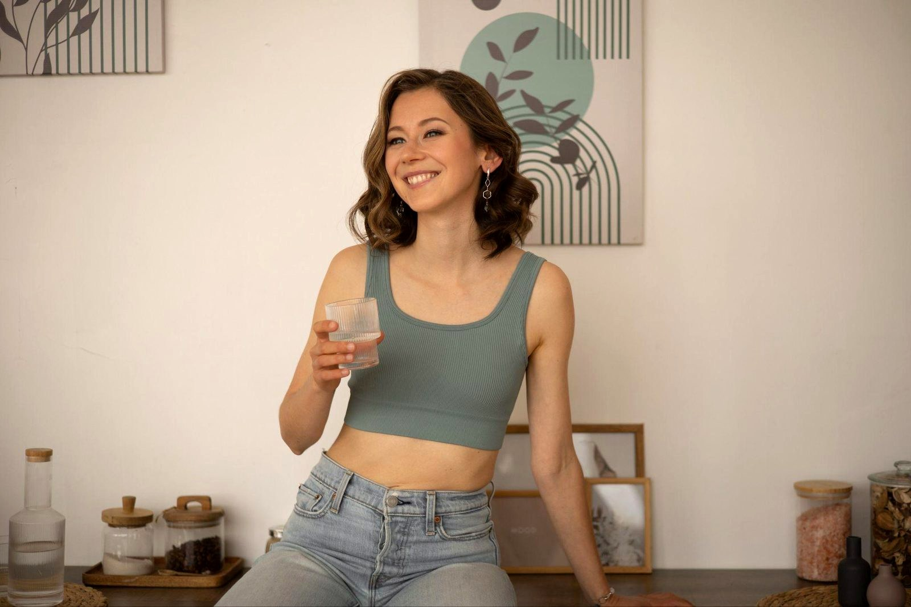
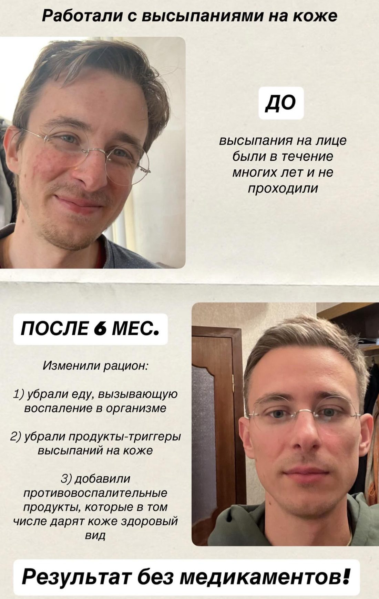
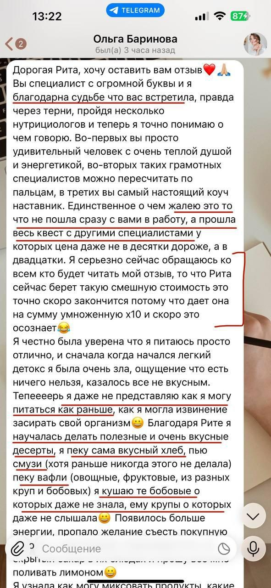
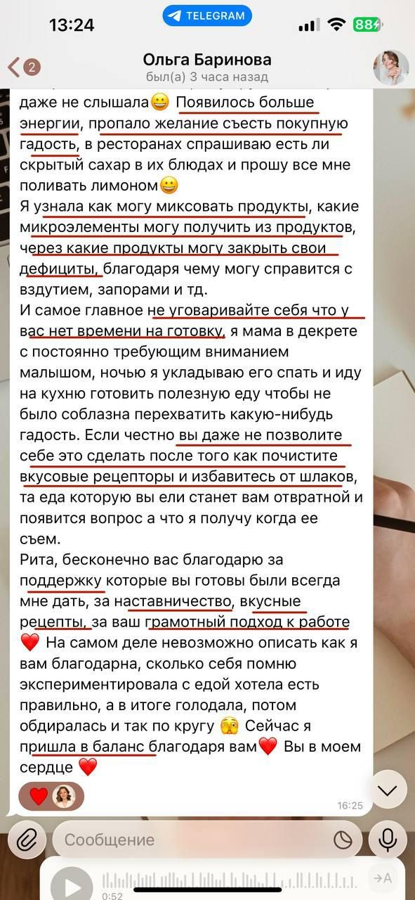
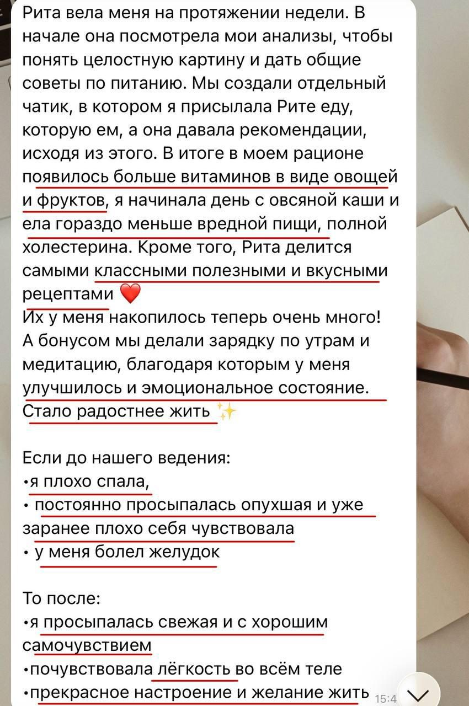
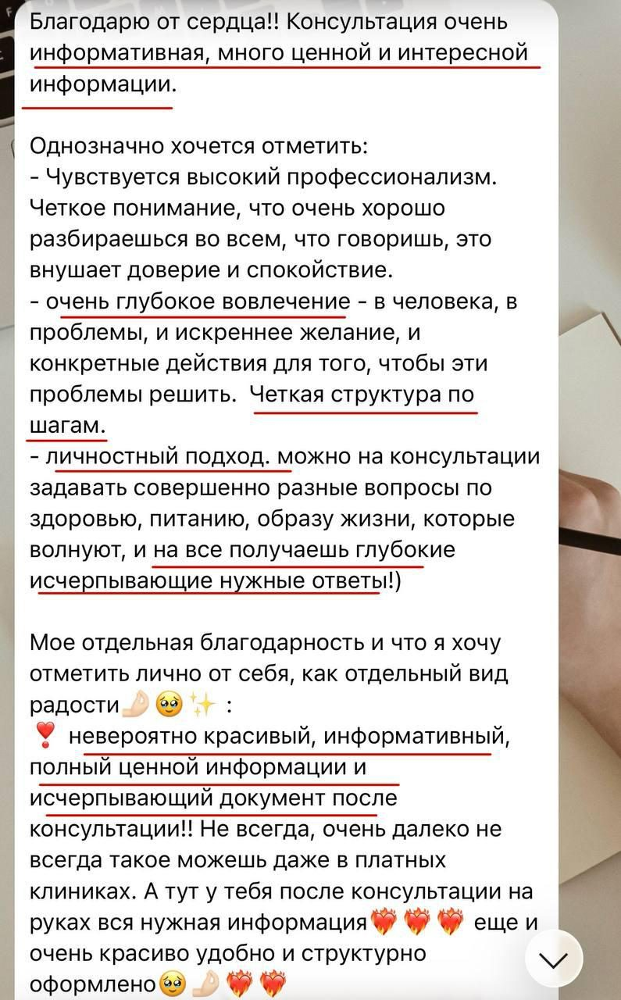
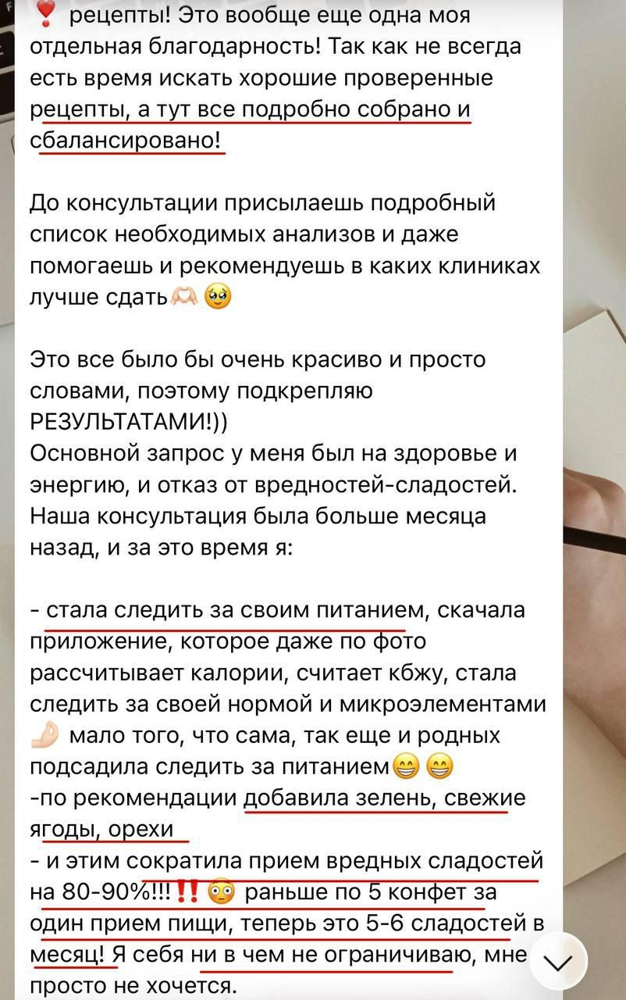
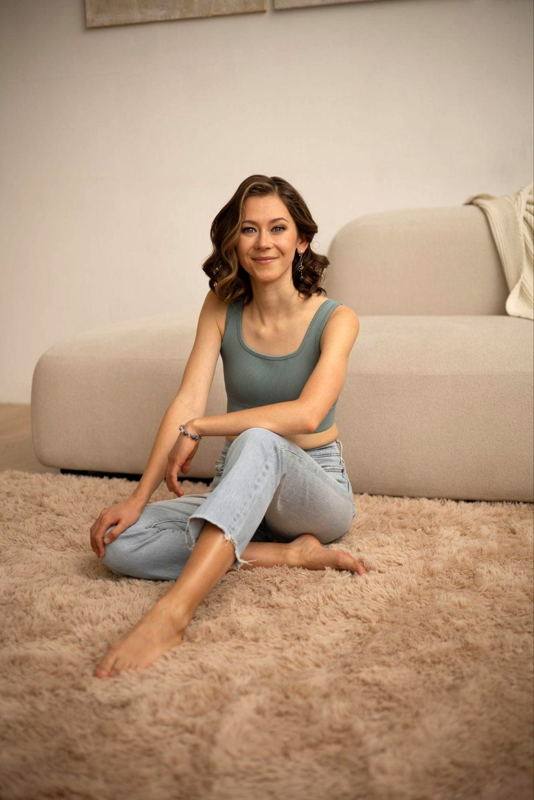

Энергия на максимум
За 2 месяца пройдём по маршруту повышения энергии и здоровья через питание и образ жизни для максимального раскрытия вашего потенциала
Получите индивидуальный маршрут от нехватки сил, усталости, апатии к энергии, спокойствию и радости от жизни. Вы пройдёте этот путь с поддержкой и уже после первой недели заметите большой прилив энергии, а по итогам 2 месяцев мы трансформируем ваше питание и образ жизни, чтобы они стали мощными помощниками в раскрытии вашего потенциала и достижении целей.

Сопровождение
Кому подходит
-
Цените свой внутренний ресурс и хотите сделать питание и образ жизни мощными помощниками, чтобы достигать своих целей и максимально реализовать себя без выгорания
-
Понимаете важность питания и образа жизни, но вечно в дедлайнах и задачах, не знаете, с чего начать и как оптимально внедрить здоровые привычки, кажется, что это сложно и долго
-
Вам сложно внедрять здоровое питание и привычки самостоятельно, постоянно есть срывы, не хватает времени, дисциплины, чувствуете, что нужна поддержка и помощь
-
Ощущаете нехватку энергии: сложно просыпаться по утрам, после 8 часов сна опять энергия на нуле, с трудом приступаете к работе, есть слабость в теле, сонливость и вялость уже в середине дня, ближе к вечеру как выжатый лимон, откладываете важные задачи изо дня в день, так как нет сил
-
Замечаете апатию, вечно плохое настроение, состояние «ничего не хочется делать», даже бытовые и простые задачки кажутся испытанием, испытываете тревогу и раздражительность по, казалось бы, мелочам
-
Вам не нравится ваш уровень продуктивности: трудно держать фокус, есть туман в голове, нет быстроты и ясности мысли, сложно запоминать и воспроизводить информацию
-
Имеете состояния, которые воруют энергию и снижают качество жизни (лишний вес, дефициты, постоянные простуды, проблемы с желудком, кишечником, щитовидной железой и др.), хотите к ним подойти комплексно через питание и образ жизни
За 2 месяца программы я помогаю трансформировать питание и образ жизни так, чтобы они стали максимально в плюс для здоровья и энергии, реализации целей, помогаю найти такие решения, которые идеально впишутся в ваш рабочий график
Наполнение
Что включает программа
-
2 месяца: неделя диагностики + 4 недели программы + поддерживающий месяц
-
5 онлайн-сессий по одной раз в неделю + итоговая сессия в конце 2-го месяца
-
Готовые меню на первые 2 недели программы (меню для перезагрузки организма и по сбалансированной тарелке) + помощь с рецептами
-
Сопровождение и поддержка в чате: материалы, задания, планеры, трекеры, ссылки на продукты, помощь с выбором продуктов в магазине, ответы на вопросы, мониторинг прогресса по рекомендациям
-
Детальный анализ вашего рациона: диагностика текущего рациона за неделю и отслеживание рациона по ходу программы
-
Обратная связь по анализам: список рекомендуемых анализов и пояснения по результатам показателей
-
Работа с приглашённым экспертом по естественному омоложению: диагностика, индивидуальные упражнения для лица и тела
-
Фишки по образу жизни для повышения энергии: работа с качеством сна и двигательной активности, над снижением тревожности и токсической нагрузки
В подарок — повторная консультация (в чате или созвон) через 1–4 месяц после программы согласно индивидуальному маршруту. Дам обратную связь по повторно сданным анализам и уточню рекомендации. Обычная стоимость 5 000 рублей.
Как проходит
Этапы программы
-
Неделя 0·Диагностика
- Пройдёте диагностику вашего питания и образа жизни, а также лица и тела
- Получите список рекомендуемых анализов для сдачи
- Получите специальное меню с простыми рецептами, список продуктов для перезагрузки организма
-
Неделя 1·Перезагрузка
- Перезапустите свой организм без жёстких чисток и голодовок, чтобы вывести накопленные токсины и восстановить ЖКТ для лучшего усвоения всех нутриентов, повышения энергии
- Получите индивидуальные упражнения для лица и тела, которые помогут вам выглядеть моложе и чувствовать себя увереннее
-
Неделя 2·Баланс
- Получите понятную и эффективную стратегию движения к желаемому результату по здоровью и уровню энергии с учётом вашего питания и образа жизни, анализов и текущих симптомов
- Получите специальное меню с простыми рецептами и научитесь балансировать своё питание для долгой, качественной и энергичной жизни без подсчёта калорий и стресса
-
Неделя 3·Замена
- Замените продукты и ежедневные привычки, которые воруют вашу энергию и здоровье, на простые и вкусные альтернативы, приятные улучшения в образе жизни
-
Неделя 4·Добавление
- Включите в рацион продукты и блюда, которые будут усиливать ваш уровень энергии и здоровья
-
Поддерживающий месяц
- Ответы на любые возникающие вопросы (например, помощь с выбором продуктов, рецептами, проверка вашего меню)
- Анализ прогресса недели в чате
- Итоговая сессия по всей программе в конце месяца
Поддерживающий месяц поможет не сойти с намеченного пути и продолжить движение к желаемому результату.
Подарок — повторная консультация (в чате или созвон) через 1–4 мес после программы согласно индивидуальному маршруту.
Результат
Что вы получите
-
01
Энергия с самого утра
Вы с энергией и бодростью просыпаетесь по утрам, заряжены начать ваш день, у вас отличное настроение.
-
02
Энергичное состояние
У вас высокий уровень энергии без резких провалов в середине или конце дня, появилось больше сил, чтобы реализовывать все свои идеи, а не откладывать дела на потом.
-
03
Тонус и сияющая кожа
Вы отлично чувствуете себя физически, у вас есть тонус в теле, вы снизили вес и отёчность, вы выглядите моложе, кожа сияет.
-
04
Ясность и концентрация
У вас высокий уровень концентрации и мотивации, нет тумана в голове, вы быстро решаете задачи, достигаете свои цели.
-
05
Привычки в удовольствие
Вы встроили полезные привычки в свою жизнь так, чтобы это было вкусно, быстро и в удовольствие.
-
06
Инструменты на всю жизнь
У вас есть инструменты, которые помогут вам вернуть энергию и классное самочувствие в любой момент.
Живые истории
Отзывы






Стоимость
49 500руб.
Программа предполагает глубокую индивидуальную работу, максимальное погружение в ваши запросы по здоровью и уровню энергии, разработку материалов под вас, регулярное взаимодействие и поддержку в течение 2 месяцев. Это инвестиция в ваше здоровье и уровень энергии.
Программа поможет вам сэкономить от 400 тыс.
- Экономия на самостоятельном погружении в тему и обучении всем нюансам, избыточных анализах и диагностике, излишних БАДах
- Экономия на косметологических процедурах — благодаря улучшениям в питании и образе жизни и упражнениям от эксперта по естественному омоложению
- С большой вероятностью вы будете меньше болеть — снизятся затраты на лечение и потери в зарплате из-за частых больничных
Количество мест ограничено. Беру только 2 человека в месяц
КупитьСигнал
Когда особенно стоит прийти на программу?
-
Сложно внедрять здоровое питание и полезные привычки самостоятельно, нужна поддержка, много вопросов по продуктам, сочетаниям продуктов, рецептам и т. д.; хочется, чтобы провели за руку по всем нюансам, дали меню, по которому можно двигаться
-
Вроде питаетесь хорошо, полезные привычки уже есть, а энергии всё равно не хватает, ходите в уставшем состоянии бо́льшую часть дня, хотите увидеть слепые зоны и вместе с поддержкой над ними поработать
-
Хотите комплексно оценить состояние организма и получить детальную обратную связь по анализам: объяснение простым языком, о чём сигнализирует тело, рекомендации — подключать ли какие-то добавки для поддержки организма или можно только поработать с питанием и образом жизни, как совмещать добавки, чтобы было не во вред, через какое время можно повторно оценивать прогресс и т. д.

О себе
Маргарита Лунева
Консультант по питанию и образу жизни
- Более 6 лет в теме здорового питания и образа жизни
- Дипломы академии лайфстайл медицины LIFEMED: в 2025 году академия признана онлайн-школой года в сфере здоровья и фитнеса по версии GetCourse, крупнейшей в России и СНГ платформы для онлайн-обучения
- Опираюсь на подходы ведущих школ по питанию и клиник, последние научные исследования, в том числе на английском языке
- Работаю индивидуально и веду групповые программы по здоровому питанию и образу жизни
- Провожу онлайн-сессии по питанию и образу жизни для компаний
- Более 4 лет работала в консалтинге специалистом по устойчивому развитию в Kept – знаю, как совмещать полезные привычки и работу в режиме дедлайнов и многозадачности
Вопрос — ответ
Ответы на частые вопросы
Будут ли учтены в меню мои предпочтения в еде?
Да, конечно! Этим и хорош индивидуальный формат – меню будут учитывать ваши предпочтения, ритм жизни, степень готовности к изменениям в рационе.
Подойдёт ли структура программы под мой запрос?
Да, структура программы составлена как каркас. Конкретное наполнение будет именно по вашему запросу.
Возможна ли оплата по частям?
Да, есть внутренняя рассрочка – стоимость 49 500 рублей можно распределить так:
- 2 платежа по 24 750 рублей перед каждым месяцем
ИЛИ
- 9 платежей по 5 500 рублей перед каждой неделей
Сколько нужно времени на программу, получится ли у меня?
Программа основана на гибком подходе: рекомендации будут учитывать ваш темп жизни, мы будем их поэтапно интегрировать в ваш каждый день, корректировать при необходимости – у вас точно всё получится. В первый месяц лучше закладывать 3–4 ч в неделю на онлайн-сессию, знакомство с материалами, задания.
Почему такая длительность у программы?
Ваши текущие привычки формировались годами, чтобы у мозга было минимальное сопротивление новому, очень важно двигаться постепенно и в удовольствие, не пытаться после одной консультации стать другим человеком. По опыту – 2 месяца это оптимальный срок для того, чтобы процесс был максимально комфортным и лёгким.
Обязательно ли сдавать анализы?
Крайне желательно, так как результаты анализов могут показать дефициты по нутриентам, состояния, которые крадут энергию, красоту и здоровье. Знание первопричины по анализам помогает сделать действия ещё более целенаправленными. Если сейчас нет финансовой возможности сдать расширенный список анализов, я составлю план поэтапной сдачи, начиная с комфортной для вас суммы, подскажу лабораторию, какие анализы можно сдать бесплатно.
Есть ли гарантия результата?
Со своей стороны я гарантирую предоставить вам заявленные в программе материалы, поддержку для решения вашего запроса. Важно понимать, что ответственность за результат исходит из двух сторон — он также зависит от степени вашей реализации рекомендаций. Программа предусматривает гибкий подход — корректировку шагов под ваше самочувствие, ритм жизни, чтобы у вас получилось.
А точно питание и образ жизни помогут решить мой запрос?
Если у вас есть сомнения, можете написать мне в личные сообщения, рассказать про ваш запрос и я отправлю подробные пояснения, поможет ли в вашем конкретном случае питание и образ жизни.
Подойдёт ли мне программа, если я уже много всего знаю в питании и ЗОЖ? Это программа для совсем новичков в теме?
Наполнение программы будет именно под вас, буду конечно учитывать ваш уровень знаний, что вы уже пробовали, но не помогло и т. д.
Нужно будет обязательно подключать добавки, БАДы?
В первую очередь будем работать с запросом через питание и образ жизни, я не буду давать длинные протоколы с добавками, БАДы подскажу только точечно и по анализам, дам рекомендации по брендам, вы сможете по желанию их подключить.
Почему такая стоимость программы?
Программа включает глубокую индивидуальную работу, максимальное погружение в ваши запросы по здоровью и уровню энергии, разработку материалов под вас, регулярное взаимодействие и поддержку в течение 2 месяцев.
Это инвестиция в ваше здоровье и уровень энергии:
– вы получите инструменты для улучшения вашего самочувствия, которые останутся у вас навсегда, некоторые из них вы можете применять не только для себя, но и своей семьи, повышая уровень здоровья и энергии своих близких;
– согласно исследованиям здоровое питание и образ жизни помогают снизить риски хронических заболеваний, онкологии, сэкономить годы на болезни, получить дополнительные годы жизни (здоровое питание и полезные привычки могут подарить дополнительные 8–10 лет качественной жизни).